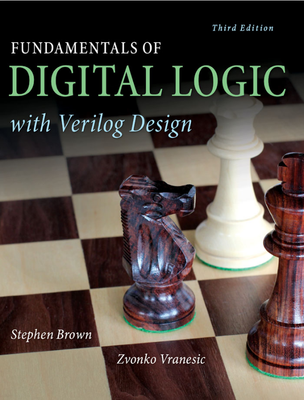
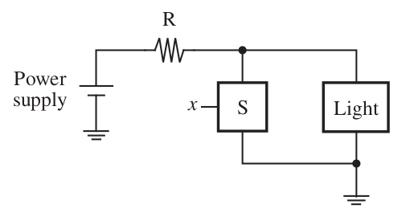
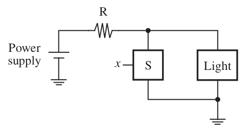

ECE 275: Sequential logic systems
Vikas Dhiman
Barrows Hall Rm 105, vikas.dhiman@maine.edu
TA: Pascal Francis-Mezger
13 Barrows Hall, pascal.francismezger@maine.edu
Syllabus
Course website: https://vikasdhiman.info/ECE275-Sequential-Logic/
Textbook
Switch

Source:Verilog 3rd, Brown and Vranesic 2014
Basic gates
AND gate
\( L_{\text{AND}}(x_1, x_2) = x_1 \cdot x_2 \)
\( L_{\text{AND}}(x_1, x_2) = x_1 \cdot x_2 \)
OR gate
\( L_{\text{OR}}(x_1, x_2) = x_1 + x_2 \)
\( L_{\text{OR}}(x_1, x_2) = x_1 + x_2 \)
NOT gate
\( L_{\text{NOT}}(x_1) = \bar{x}_1 \)

Source:Verilog 3rd, Brown and Vranesic 2014
\( L_{\text{NOT}}(x_1) = \bar{x}_1 \)

Questions and Feedback
Feedback link: https://forms.gle/qrvoXnVt5DuG4bv5A